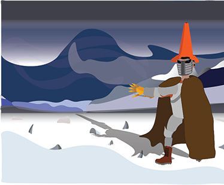

My previous works

Wyatt Desserre is a first-year student in the Multimedia Production Program at Lethbridge College with a particular focus on video and image editing. In his spare time, he enjoys playing video games and editing images into comedic amalgamations. Both interests led to his interest in the design and production of said forms of media, as his skill in the editing software Pixlr garnered the attention of his educators, who advised him to pursue this odd skill in the workforce and in his education. In his high school career, he received the Honors with Distinction title on multiple occasions, as well as Honor roll even more times, along with receiving the ‘Most Improved Graduating Student’ at Coalhurst High School. Wyatt has a lot of volunteer experience, from assisting in the operation of a Garage and Bake Sale, raising $400 for the Jack Ady Cancer Center, to working at the Pure Casino to raise funds for his local high school. Wyatt also has assisted his teacher in maintaining the trees at Coalhurst High School, from removing harmful objects to watering each tree manually, he applies himself to his maximum to complete anything he puts his mind to with excellence and efficiency. And even with all this said, he still values humor to an incredible degree, never letting it get in the way of his work, but there is no situation Wyatt can't make a joke out of, and he brings a nice light to any situation with his humor. Like, just look at that dumbass in the photo right there!
Wyatt grew up primarily in Coalhurst, Alberta, though for a short period of his life he lived in Elkford, British Columbia, though that time he was too young to fully remember. Born in 2005 and living in a small town for as long as he can remember, he has grown a strong attachment to the town, growing his aspirations and values. Thankful for those who helped him grow to be better, he pushes himself to make those people who had faith in him proud.